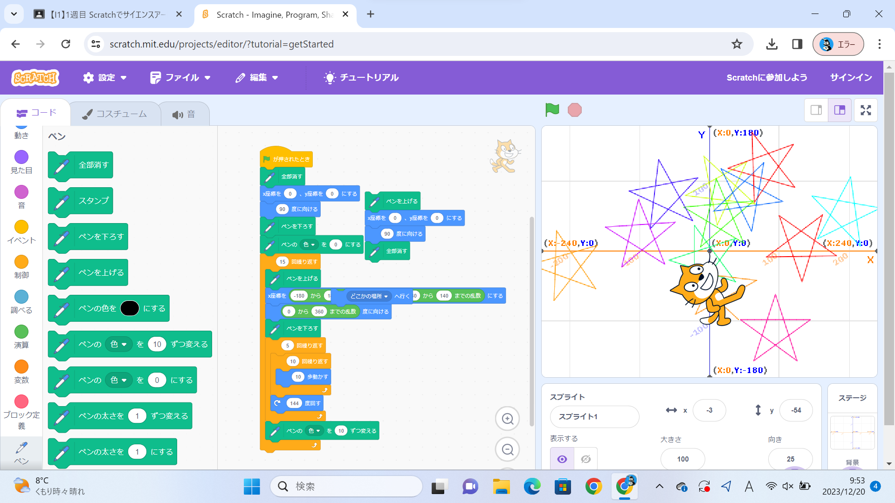
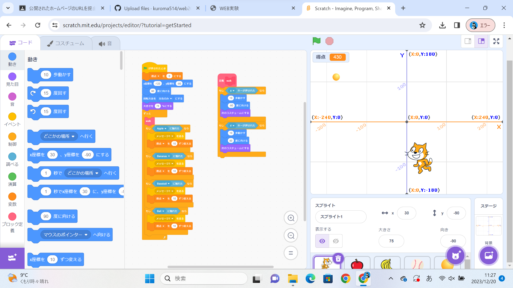

1週目のレポート ： 公大高専１年実習I-1
2b班42番 kuroma
第1週目
1-1 サイエンスアート

1.内容
スクラッチを使って線を書くプログラムを作り、私の場合は、ランダムな位置に星のマークを書くプログラムを作った。
2.感想
星のマークを作るために、どのような角度で移動させるのかを試行錯誤したり、位置をランダムにするために乱数を用いたり、色々工夫をするのが楽しかった。
1-2 ゲーム

1.内容
落ちてくるリンゴを横移動で回収して、スコアを稼ぐ単純なゲームを制作した。難易度が簡単すぎると感じたため、スコアが増えると落ちてくるフルーツと落下速度が変化するようにした。
2.感想
エンティティを4種類用意して、それぞれに変数で一定のスコアの時に動作するようにプログラムするのが、試行錯誤しながらで難しかったが、納得のいく内容のゲームが出来たため、良かった。
1-3 ホームページ作成
私のホームページ
1.内容
用意されたhtmlのコードを編集することで自分について解説するホームページを制作した。
2.感想
元々用意されたものを1部書き換えるだけであったため、難易度としては大変簡単であったが、自分のホームページを作るというのは初めての体験であったので、面白かった。また、レポートもhtmlのホームページで作成したので、プログラミングに親しむことが出来たと考える。